地方特色商品設計
把地方DNA，變成可以購買、使用與帶走的東西

10.1商品不是「貼圖案」#
地方商品常見兩種失敗：一是把地方圖案貼在既有商品上，換個地名就能賣到別處；二是故事講得動人，卻沒有人做得出來、也沒有人買得下手。成果8要求的，是把前七項成果累積的地方意義，壓縮成一件「可購買、可使用、可帶走」的物件，同時處理地方性、使用價值、製造可行性、價格、包裝、永續與故事。
圖10.1把一件地方商品拆成四層：核心是「地方DNA×使用需求」，往外依序是物件本體、包裝與溝通、服務與通路。每一層都由特定的上游成果供應素材（表10.1列出前七項成果與成果9的用途）。上游成果愈扎實，商品愈不會淪為「貼上地方圖案的一般商品」。
| 既有成果 | 在商品中的用途 |
|---|---|
| 成果1 地方DNA | 決定商品的主題軸與追溯依據；每一項設計決策都要對應至少一項核心DNA |
| 成果2 五感體驗 | 觸感、氣味、聲音與使用時的感官線索，轉為材質與使用體驗的依據 |
| 成果3 文化語彙 | 形成品名、包裝文案與故事卡的用詞，優先採用經居民檢核的原生用語 |
| 成果4 設計語彙 | 轉成造型語法與CMF規則（色彩、材料、表面處理） |
| 成果5 脈絡分析圖 | 人物、產業與組織節點，是合作業者與材料來源的候選；高潛力轉譯點就是商品機會 |
| 成果6 地方色彩 | 商品與包裝的主色、輔色與強調色比例 |
| 成果7 地方圖紋 | 包裝紙、手提袋、布料與商品表面；只使用已通過無縫檢核的樣式圖 |
| 成果9 體驗遊程 | 提供通路與測試場域：收尾站的陳列與販售、手作站的延伸購買、試走時的原型測試 |
商品的地方性靠POI（Point of Interest，興趣點）來證明。在成果9的遊程裡，POI是旅客的「停留點」；在成果8的商品裡，POI是商品的「來源點」：能為商品提供地方DNA、材料、技藝、故事、視覺素材或販售通路的地點、人物或活動。同一個POI可以同時是遊程的一站與商品的來源，兩份資料表使用同一個編號，不重複建檔。
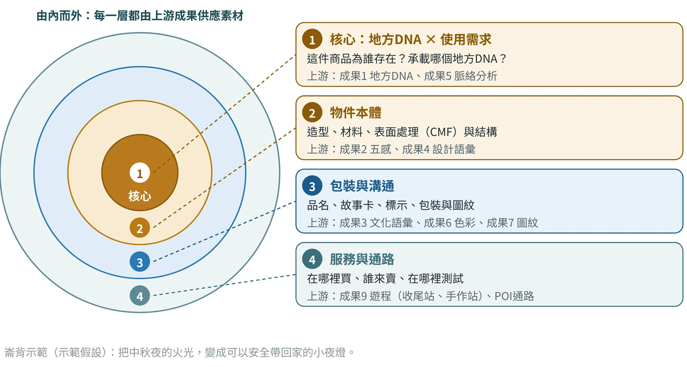
10.2八個步驟：從任務書到測試#
商品設計沿用第4章的雙鑽石思維。第一顆鑽石「理解地方」就是第5至7章累積的證據、DNA與語彙；商品位在第二顆鑽石「發展商品」〔文1〕。圖10.2顯示，S1–S8本身也是一次小型的「先研究、再萃取、後轉譯、最後驗證」：S1–S2蒐集與盤點，S3–S4篩選資源並定義需求，S5–S7把需求轉成概念、規格、原型與價格，S8用使用者與地方回饋驗證。
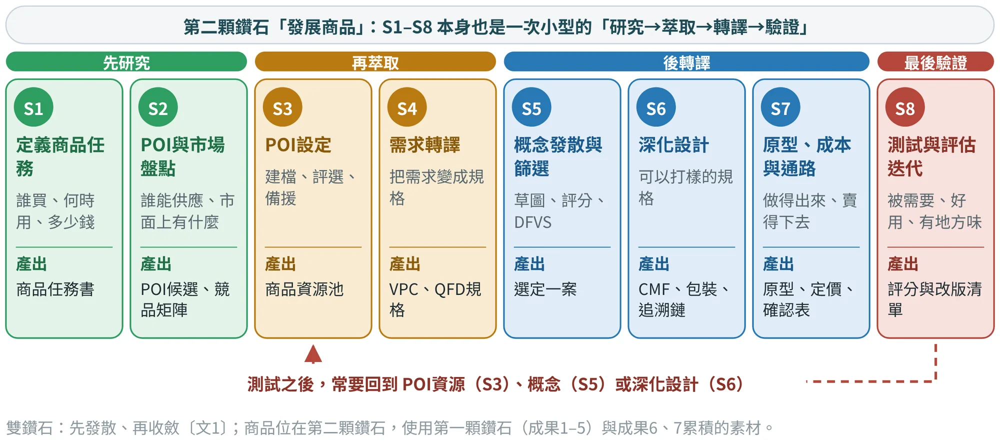
其中S3「POI設定」決定商品的資源與可追溯性，是本章的重點。測試之後，常要回到POI資源、概念或深化設計重做，這是方法的一部分，並不代表前面做錯了。以下各節依S1–S8的順序，以崙背鄉的「小夜燈」為主線示範；竹山的「竹杯彩繪包」在10.10節完整走一遍，10.11節再與崙背對照。
10.3S1 定義商品任務#
商品設計先寫一頁「商品任務書」：為誰設計、在什麼情境使用、賣多少錢、在哪裡賣，以及有哪些限制。任務書不是形式，它要能回答：每一項設定，如何影響POI、材料或價格的選擇？
崙背示範的機會來自三筆證據：迎暗境與文化節的主角是火把，但火把本身帶不走、也不適合擺在家裡示範假設；主辦方近年已把火把改為燈泡式的環保火把〔崙5〕，2025年更讓報名者領取復刻的鎢絲火把〔崙1〕，顯示「把火把變成安全的物件」在活動內部已有基礎；一般市集伴手禮容易看不出崙背示範假設，須訪談驗證。因此示範把任務定為：把中秋夜的火光，變成可以安全帶回家的小夜燈（表10.2）。另依雲林縣政府2025年10月6日的公告，「崙背詔安客庄迎暗境」已於2025年1月登錄為雲林縣民俗，保存者為水汴頭崇賢寺〔崙28〕。這項查證支持文化背景，並不代表保存者已同意商品提案，也不代表已完成現場研究。
| 項目 | 示範設定（示範假設） |
|---|---|
| 場域 | 雲林縣崙背鄉 |
| 主題假設 | 把中秋夜的火光帶回日常：不用明火、可以擺放、說得出來歷的小夜燈 |
| 核心DNA | D2澹仔火與迎暗境（主題軸）；D1詔安客語與詔安客家三寶（副線，轉成故事卡的一句客語）；D3、D4、D5保留給季節版與下一階段 |
| 目標客群 | 文化節回訪者：每年回鄉或回訪文化節的在外鄉親，與慕名而來的文化旅客，約35–60歲 |
| 需求情境 | 送禮為主、收藏為輔；自用列為延伸 |
| 價格帶與數量 | 新台幣500–900元；首批100組，打樣後確認 |
| 通路 | 詔安客家文化節市集；詔安客家文化館展售；千巧谷牧場賣場待確認 |
| 限制 | 不使用明火；電池與電子模組須符合安全規範並標示；民俗名稱與意象須取得保存者同意；不使用神像、符令、神轎等宗教圖像；包裝標示「紀念品，非祭祀用品」；須放得進一般手提袋 |
任務書至少要區分自用、送禮與收藏三種需求，並標出主要與次要，避免用單一客群定義商品（表10.3）。三種需求的設計重點不同：自用看功能與保養，送禮看包裝與故事，收藏看工藝細節與限量機制。
| 需求 | 在意什麼 | 設計重點 | 價格敏感度 |
|---|---|---|---|
| 自用 | 好用、耐用、好清潔、每天用得到 | 功能、材質與保養說明 | 高 |
| 送禮 | 體面、有故事、包裝完整、好攜帶 | 包裝結構、故事卡、品名 | 中 |
| 收藏 | 稀少、手作痕跡、限量或編號 | 工藝細節、限量機制、簽名或證書 | 低 |
Persona（人物誌）要依旅客與居民的訪談建立，不以想像代替；資料不足的欄位就標「待補」。與成果9共用Persona時，要註明商品在遊程中的位置，例如收尾站或手作站。
10.4S2–S3 商品POI：盤點、評選與備援#
五種角色：從地方到手上
一件商品通常需要好幾個POI分工（圖10.3）：有的供應材料，有的負責製作，有的提供故事或視覺素材，有的是商品與人相遇的地方。每個POI盤點時就標出能提供的角色。一件商品至少要有「材料或工藝」「故事」「通路」三類POI各一個；建議候選清單累積到15至30筆，五種角色各至少有2個候選。
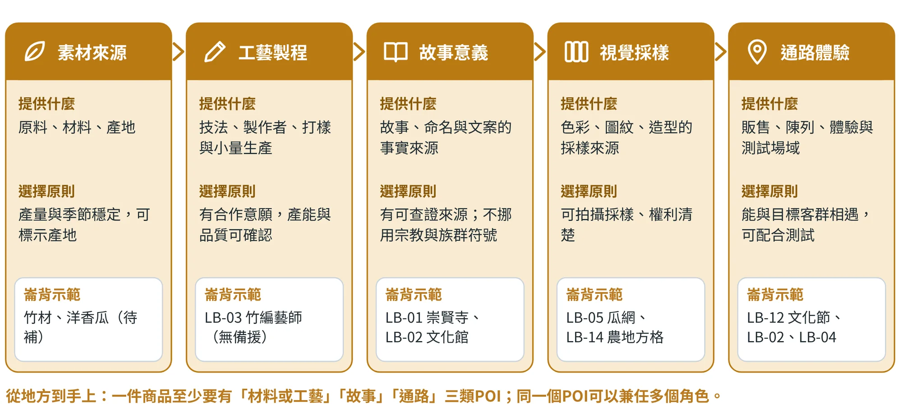
POI類型沿用成果9的八種代碼（A信仰與歷史場所、B產業與市集、C工藝與技藝、D飲食、E空間活化與社群、F自然與景觀、G感官節點、H服務與物流）。其中H在遊程是集合點、停車等服務設施，在商品則是包材、印刷、寄送與倉儲業者，須實地盤點。人物（職人、居民）依所在場所歸類；在商品、包裝或故事卡上使用其姓名、肖像或作品，要另外取得本人書面同意。
三道關卡：門檻、加權評分、覆蓋檢查
候選POI依序通過三道關卡。第一關是門檻，三項全部通過才進入評分：業者或當事人有意願提供資源或授權、材料與製程沒有安全疑慮或風險可控制、至少有一個可查證的資料來源；未通過者列為「暫緩」，不刪除。第二關是加權評分（表10.4），每項1–5分、滿分50；建議35分以上列入資源池，28–34分列為備援或季節限定。第三關是覆蓋檢查：資源池合起來要涵蓋主題軸與副線的所有DNA，素材或工藝、故事、通路三類角色各至少一個POI，至少一個能採樣視覺素材，而且工藝與通路都有備援。
| 準則 | 權重 | 5分的樣子 | 1分的樣子 |
|---|---|---|---|
| DNA關聯度 | ×3 | 直接體現核心DNA，且有兩種以上證據 | 與核心DNA無關 |
| 故事與辨識度 | ×2 | 有人、有事、有轉折，一看就知道是這裡 | 只有一般介紹，換個地方也成立 |
| 資源可供應性 | ×2 | 材料、技藝或通路確實能用在商品上 | 只能參觀，無法供應 |
| 合作意願與產能 | ×1 | 願意合作，產能與品質穩定 | 沒有意願，或產能極少 |
| 品質與法規風險 | ×1 | 材料與製程安全、法規單純（風險低） | 涉及高風險製程或複雜法規 |
| 社區受益 | ×1 | 商品銷售能直接回饋在地 | 在地沒有受益 |
評分由小組依田野資料討論後給分，並寫下給分理由；AI可以協助整理與計算，但不代為評分。
圖10.4是崙背示範的結果：15個候選POI中有6個達35分、列入資源池。取捨的重點有三。第一，詔安客家文化節（44分）最高分，是通路與測試場域，但它由崙背、二崙、西螺輪流承辦，輪到他鄉的年度，開幕與市集不在崙背，所以通路要另有備援。第二，水汴頭崇賢寺（42分）是迎暗境的保存者，它的角色不是供貨，而是同意商品使用民俗名稱與意象，因此在QFD中列為門檻。第三，竹編藝師與千巧谷牧場（各35分）剛好壓在入選線上：竹編藝師是唯一的工藝來源、沒有備援；牧場主要提供通路。兩者入選，但都帶著風險註記。
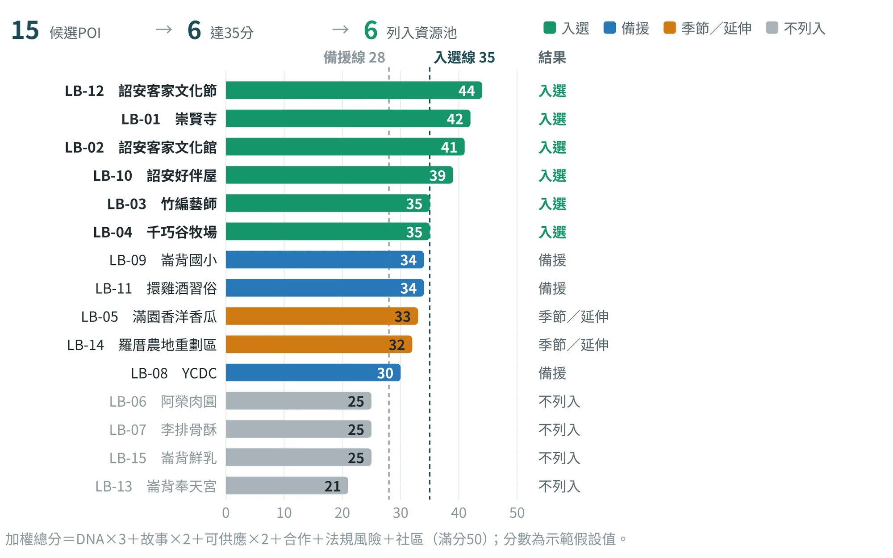
分數只是第二關。第三關的覆蓋檢查顯示，分數高不代表資源齊全（表10.5）。
| 檢查項目 | 結果 | 判定 |
|---|---|---|
| DNA覆蓋 | 主題軸D2：LB-01、LB-03、LB-12；副線D1：LB-02、LB-10、LB-12、LB-03 | 通過 |
| 角色覆蓋 | 故事：LB-01、02、10；通路：LB-02、04、12；工藝：LB-03；材料：入選POI只有輔助來源，沒有主要來源 | 材料未通過 |
| 視覺採樣 | 入選POI只有輔助來源；主要來源LB-05（瓜網）、LB-14（農地方格）是季節／延伸POI，可採樣但未列入資源池 | 部分通過 |
| 關鍵資源備援 | 工藝只有LB-03，沒有第二位職人；通路有文化節、文化館、牧場三處，備援為YCDC | 工藝未通過；通路通過 |
| 權利 | 崇賢寺的名稱與意象授權、職人姓名與作品的使用同意 | 待確認 |
缺口不是失敗，而是下一輪田野任務：竹材由誰供應、能否找到第二位竹編職人、LED模組與電池的供應與檢驗、視覺採樣的正式來源、包材與印刷的最小印量與交期。田野要問的問題寫得很具體，例如「燈罩與竹柄用的竹子從哪裡來？一次拿得到多少？」「除了您，還有誰做竹編？可以接小量訂製嗎？」。
POI設定卡：把資料與授權狀態一起建檔
每個入選POI都要有一張設定卡。欄位分七組：識別、地方意義、商品供應、合作與營運、品質與法規、媒體與權利、狀態。其中「合作與營運」「品質與法規」「媒體與權利」三組，只能填實際確認過的資料，未確認一律標「待確認」，不得以網路舊資料或AI推測代替（表10.6）。
| 欄位群組 | 內容 | |
|---|---|---|
| 識別 | LB-01／水汴頭崇賢寺／A信仰與歷史場所已查證；現址與座標須現場確認待確認 | |
| 地方意義 | 對應DNA：D2（主）、D7；相關語彙：澹仔火、迎暗境、顧更、遊庄（用語須經居民檢核）；來源〔崙2〕〔崙3〕〔崙7〕 | |
| 商品供應 | 角色：故事（主要）；視覺、通路（輔助）。可提供迎暗境故事與正確用語的審訂；是否同意商品使用「迎暗境」「澹仔火」名稱與火把意象待確認 | |
| 合作與營運 | 合作意願、回饋方式（例如銷售提撥比例、包裝回饋標示）、聯絡窗口：待確認 | |
| 品質與法規 | 不使用神像、符令、神轎等宗教圖像；包裝標示「紀念品，非祭祀用品」；其餘標示依《商品標示法》〔法1〕待確認 | |
| 媒體與權利 | 活動照片須自行拍攝並取得現場許可，報導照片不得直接使用；廟名、民俗名稱與意象須取得書面同意待確認 | |
| 狀態 | 待確認／日期／確認人：— | |
常見錯誤 初學者容易犯的錯 授權是門檻，不是加分項。 崇賢寺在評分中是第二高分，但它的同意無法用分數交換。未取得書面同意，概念A不上市；這一點在QFD規格E7中列為門檻，並排在待確認事項的第一位。 | ||
10.5S4 需求轉譯：從「人想要什麼」到「規格要做到什麼」#
需求轉譯有三個工具，依序使用。Value Proposition Canvas（VPC）〔文2〕〔文6〕把「客群」與「價值」分成兩側對照：客群側是任務、痛點與獲益，價值側是產品與服務、解痛方案與增益方案；兩側一一對得上，才算「契合」。客群側依訪談與觀察整理、每項附證據編號；價值側在這一步只寫「價值方向」，不急著指定商品（表10.7）。
| 客群側（文化節回訪者） | 價值側（價值方向） | |
|---|---|---|
| 任務／產品與服務 | 留下中秋夜與文化節的記憶；送給沒來的親友；擺在家裡的小物 | 竹編火把造型的小夜燈；故事卡（來源、客語一句與音檔）；市集與館舍展售 |
| 痛點／解痛方案 | 火把不能帶回家；市集伴手禮看不出崙背；不懂文化，怕送錯；怕易碎、不好帶 | 不用明火，安全帶回家；附使用與充電說明；輕巧包裝，放得進手提袋 |
| 獲益／增益方案 | 說得出來歷的紀念；擺在家裡有儀式感；不是隨處買得到 | 說得出火把與迎暗境的故事；竹編手作，看得出崙背；保存者授權與回饋標示 |
接著用QFD（品質機能展開）〔文3〕〔文7〕決定先把哪些規格做好：從訪談與VPC整理6–8項需求，請受訪者逐項給重要度1–5分；把每項需求寫成可量測的規格（例如「盒子放得進一般提袋、通過寄送測試」，而不是「好攜帶」）；逐格判斷需求與規格的關係，強9、中3、弱1，無關留白；規格重要度＝Σ（需求重要度×關係分數），排序後取前三名作為設計重點。圖10.5是崙背示範，7項需求由8位目標客群逐項給分並取整數示範假設。例如規格E2的重要度＝5×3＋4×9＋4×1＋3×1＋4×3＋3×3＋4×3＝91。
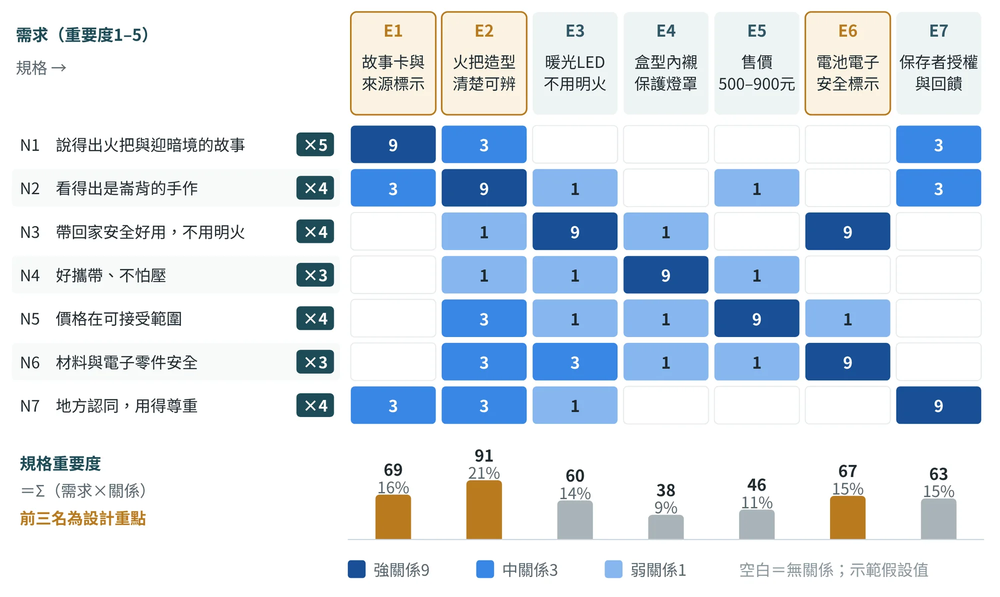
前三名依序是E2「竹編燈罩與火把造型清楚可辨」（91）、E1「故事卡與來源標示」（69）與E6「電池與電子模組符合安全規範並標示」（67），成為S5與S6的設計重點。E7「保存者授權與回饋標示」重要度排第四（63），但不以分數取捨：未取得授權就不上市。QFD做完要檢查兩件事：沒有任何關係的規格要刪除或改寫，沒有任何規格回應的需求要補上規格。
第三個工具是競品矩陣與定位。示範以商品類別代替具體品牌，各給「地方性」與「實用性」1–5分並標出價格帶（圖10.6）；正式作業須列出實際調查的商品、售價、調查日期與通路，至少5件。在本示範調查的5個類別中，只有「在地農特產禮盒」落在「地方性3分以上、實用性3分以上」的區塊，而且是食品；非食品、耐久、可日用的商品，區內還沒有對手。
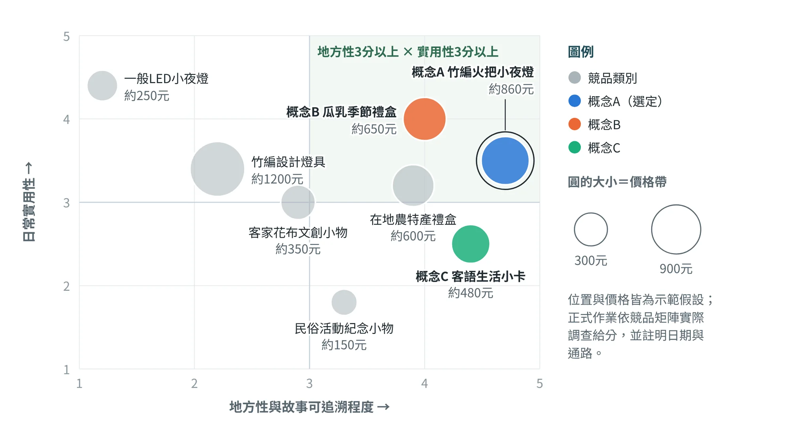
定位圖的座標是與競品並排的相對位置，和10.6節的概念評分分開給分，兩者的數字不必相同。
10.6S5 概念發散與篩選：三案收斂為一案#
小組先各自畫草圖（每人3–5張，可用生成式影像AI做情境模擬，但不作為規格依據），再收斂為三個概念，每個概念用同一格式的概念卡寫清楚。三個概念刻意取自不同的DNA組合，讓比較有意義：A來自主題軸，B來自次核心，C來自副線（表10.8）。
| 項目 | A 澹火夜行：竹編火把小夜燈 | B 瓜與乳：洋香瓜鮮乳點心季節禮盒 | C 一句詔安客語：生活小卡與花布束口袋 |
|---|---|---|---|
| 核心DNA | D2、D1 | D3、D4 | D1、D5 |
| 來源POI | LB-01（故事、授權）、LB-03（燈罩）、LB-02與LB-12（展售）、LB-10（客語審訂） | LB-05（瓜）、LB-04（通路）；點心須由合格食品業者製作（待補） | LB-10（客語審訂）、LB-02（展售）、LB-09（備援，須監護人同意） |
| 功能 | 竹火把的細長造型，USB-C充電的暖光小夜燈，不用明火；附故事卡 | 洋香瓜與鮮乳點心組成的禮盒，附瓜網紋包裝 | 印有一句詔安客語（含拼音與QR音檔）的生活小卡，搭配印花布束口袋 |
| 價格帶 | 700–900元 | 550–750元 | 400–550元 |
| 主要風險 | 民俗名稱與意象授權；電池與電子零件安全；手工產能只有一位職人；寄送壓損 | 食品標示、保存期限與冷鏈運送〔法2〕；鮮乳品牌授權 | 客語用字與讀音審訂；學童聲音與肖像須同意；日常用途較弱 |
評分用五項指標加權（地方性×3、實用性×2、吸引力×2、可行性×2、永續性×1，滿分50），由小組、2位居民與1位業者共同討論後給分，並寫下理由。結果如圖10.7：概念A總分最高（42分），進入深化設計；概念C（39分）的核心「一句客語」併入A的故事卡，完整版留待下一階段；概念B（35分）可行性只有2分，受食品法規、冷鏈與品牌授權限制，列為季節版另案。未入選的概念要記錄去向，例如季節版、限量版或下一階段。
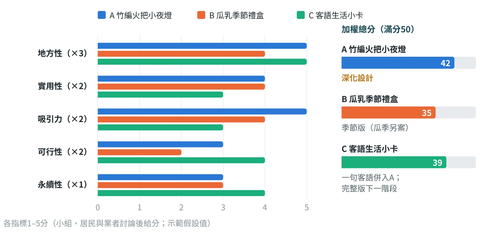
分數之後，再用DFVS四問檢視風險。D（Desirability有人想要嗎）、F（Feasibility做得出來嗎）、V（Viability賣得下去嗎）三問源自以人為本設計的三個面向〔文4〕〔文8〕，本課程再加上S（Sustainability對環境與社區好嗎）（表10.9）。選定方案的每一項優勢都要有證據；得分最低的指標要有具體的改善計畫，例如概念A的可行性與永續性都只有3分，改善計畫是補第二位職人、取得LED模組與電池的報價與檢驗方式、以寄送測試確認盒型，並以內襯不用塑膠、附電池回收說明、補竹材來源追溯資料來提升永續性。
| 四問 | 判斷 | 證據 | 待確認 |
|---|---|---|---|
| D 有人想要嗎？ | 中高 | 主辦方已將火把改為環保火把〔崙5〕，並讓報名者領取復刻鎢絲火把〔崙1〕，顯示火把造型有需求；是否願意付費購買須由測試確認 | 概念測試與原型測試（S8） |
| F 做得出來嗎？ | 中 | 竹編藝師有製作3公尺竹編開口獅的經驗〔崙6〕，但小夜燈尚未試作；材料與第二位職人有缺口 | 打樣、產能、竹材與電子零件供應 |
| V 賣得下去嗎？ | 中 | 價格帶假設700–900元，落在任務書500–900元內；v1成本偏高，須調整規格 | 成本試算與通路分潤 |
| S 對環境與社區好嗎？ | 中高 | 竹材可再生、燈可充電重複使用；收入可回饋職人與保存者；鋰電池的廢棄須有回收說明 | 電池與包材規格；回饋方式 |
10.7S6 深化設計：規格、包裝與追溯鏈#
深化設計把選定的概念寫成可以打樣的規格。CMF是Color（色彩）、Material（材料）、Finish（表面處理）的縮寫〔文5〕，用來規劃商品的外觀、觸感與材質表現：把「竹工藝」轉成材料選擇，把「火光」轉成色彩，把「手作溫度」轉成表面處理。色彩使用成果6的主色、輔色與強調色比例，材料與表面處理要寫明來源POI、規格與安全條件。表10.10是依QFD前三名規格與門檻E7寫出的v1規格。
| 部件 | 材料與規格 | 色彩 | 來源與待確認 |
|---|---|---|---|
| 竹編燈罩 | 竹篾手工編織，細長形、頂端收尖；全長約15 cm、最大徑約3.5 cm；砂磨去毛邊，不上色 | 竹本色（竹篾米） | LB-03；尺寸依樣品實測 |
| 竹柄與底座 | 圓竹，與燈罩銜接，內藏電池模組；開關在底座下方 | 竹本色 | 竹材來源待補（缺口） |
| LED暖光模組 | 暖光LED，不用明火 | — | 待補；光色與亮度規格待確認 |
| 鋰電池與充電板 | 鋰電池模組，USB-C充電 | — | 待補；須符合安全規範並標示待確認 |
| 故事卡 | 紙卡雙面彩印；故事約60字＋一句客語（含拼音）＋QR音檔 | 牛乳白底、夜藍字 | 故事來源〔崙3〕〔崙7〕、LB-01；客語由LB-10審訂 |
| 包裝盒與內襯 | 天地蓋紙盒，彩色印刷；內襯為紙漿模塑，不使用塑膠 | 夜藍＋牛乳白 | 圖紋取自成果7；LB-01同意待確認 |
商品標示依《商品標示法》第6條（名稱、廠商、原產地、主要材料、數量、製造日期等）與第7條（與衛生安全有關者，標示用途、使用與保存方法及注意事項）〔法1〕；鋰電池與充電模組適用的電氣安全與標示規定，向主管機關或檢驗單位確認待確認，本書不引用具體條文。
包裝採天地蓋，燈身橫放，盒面使用成果7的「瓜網斜格＋火點」四方連續樣式圖（圖10.8）。左側是上蓋展開圖的區塊配置，含裁切線、摺線、出血3 mm與安全區；右側是圖紋的最小單位（24×24 mm）、3×3重複預覽與三種尺度。盒背的標示區包含品名、內容物、材質、產地、廠商與聯絡方式、製造日期、充電使用注意，以及「紀念品，非祭祀用品」。圖紋套版的檢核項目見第9章表9.3。
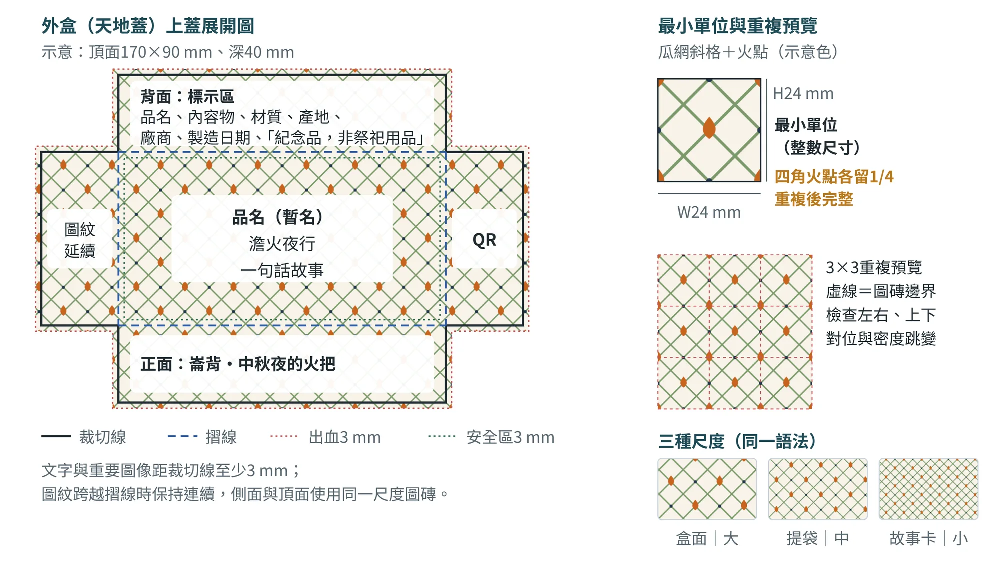
品名取自成果3中經居民檢核的文化語彙，示範暫以「澹火夜行」稱之示範假設；品名使用「澹仔火」同樣須取得崇賢寺同意。故事卡只使用有來源的事實，延伸內容放在QR音檔，例如：「早年村民提火把顧更、巡庄；如今中秋夜，崙背水汴頭仍有千人提竹火把遊庄，隊伍綿延超過一公里。這盞燈，替你留一點澹仔火的光。」（來源〔崙3〕〔崙7〕）。故事卡刻意不寫迎暗境的起源年份，因為〔崙2〕與〔崙3〕的說法不一致，待向崇賢寺確認。
文化語意如何轉成造型與包裝規則
文化意義不能直接貼到商品上，要先寫成設計規則，並同時寫下它的確認與界線。崙背示範把五條轉譯線索整理成表10.11：每一條都有「設計規則提案」，也都有尚未解決的界線。
用語的寫法也要留在規則裡。「顧更寮／隘丁寮」「開口獅／開嘴獅」在不同資料中寫法不同，研究時應保留語境與來源，請適當的地方語言與文化工作者審訂（見第7章）；官方登錄資料可以支持登錄名稱，卻不能代替日常語意與使用方式的討論。起源年份的說法不一，也要區分事件層次：區域活動源流、聚落傳承與當代活動重建，可能不是同一件事。
| 轉譯線索 | 設計規則提案 | 確認與界線 |
|---|---|---|
| 火光 | 小面積暖橘點光，配夜藍背景 | 光色須以實物測試；不仿真明火 |
| 火把輪廓 | 細長、收尖的竹編外形 | 避免被看成一般燈籠；與實際器物的差異要說明 |
| 共同巡行 | 故事卡邀請讀者理解「人」與「行動」 | 不把民俗簡化成裝飾物 |
| 瓜網／田格 | 斜格地紋，以火點作主題強調 | 農業為延伸線索，不是迎暗境的傳統圖騰；採樣來源待補待確認 |
| 詔安客語 | 由語言使用者審訂文字與音檔 | AI不自造拼音與聲音；權利與酬勞另行確認待確認 |
本案選用「瓜網斜格＋火點」作視覺提案，配色見第8章，圖磚技術見第9章。由於文化主題與農業圖紋來自不同線索，要在文案與圖說中交代主副關係，避免讀者誤以為斜格就是迎暗境的傳統圖騰。
商品上預留「紀念品，非祭祀用品」的用途說明，是本提案為避免混淆而做的設計決定。它不構成所有文化使用都已被同意的證明；名稱、故事、圖像與回饋方式，仍要與相關角色逐項討論。
最後，把追溯矩陣展開成追溯鏈，檢查每個商品元素是否都連回入選POI與DNA（圖10.9）。圖中品名與故事卡、包裝圖紋與色彩、展售與市集測試都有實線來源；竹編燈罩只有一位職人、沒有備援；竹柄、LED模組與電池則完全沒有來源，是紅色虛線標示的缺口。
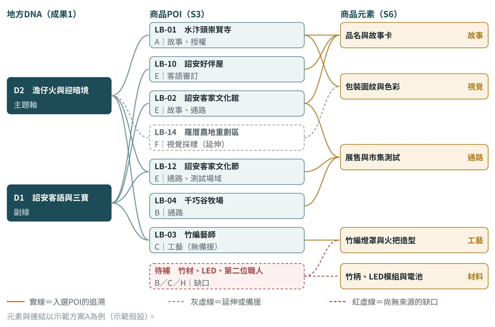
情境模擬圖：小夜燈主案與延伸商品
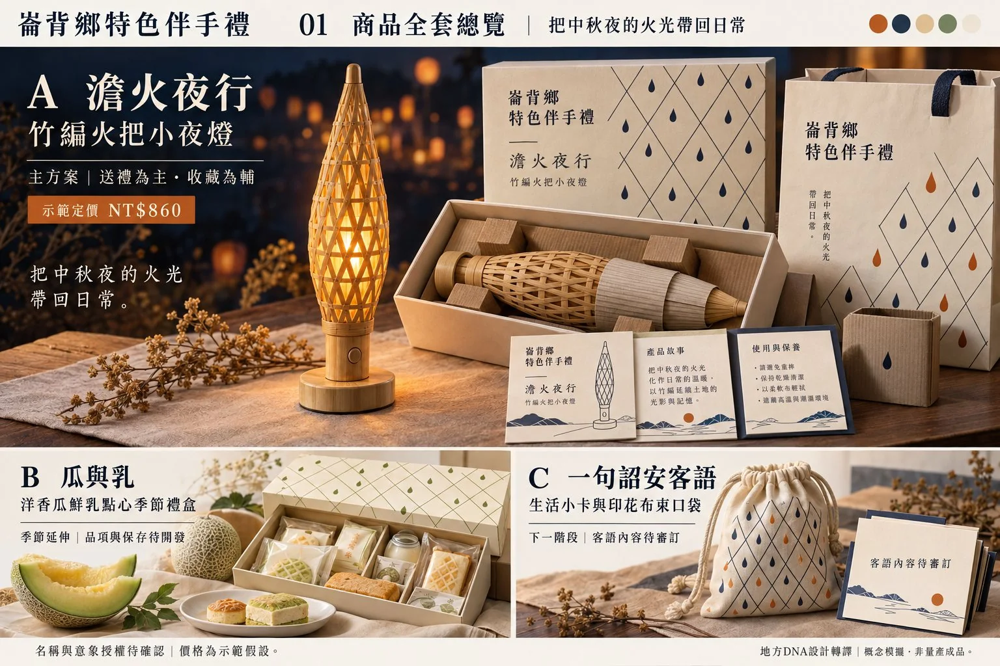
這張圖把竹編物件、暖光、夜藍線條、紙盒與故事卡組成一致的商品家族：主案以小夜燈承接夜巡意象，點心禮盒與語言小卡保留其他地方線索。這種呈現適合比較系列關係與整體氣氛，卻不代表三案已具有可量產規格或市場需求。
畫面中的山形裝飾、字樣與光影細節，仍須逐項回到來源檢查；不能因為生成圖整體精緻，就把沒有地方依據的裝飾納入正式視覺規範。燈具的實際形態、尺寸、底座、線路與充電位置，必須以實物與工程圖確認。表10.12的860元模型只針對主案既定的BOM，並不包含畫面中的點心、提袋與展示物；點心內容、保存、食品標示，與客語文字、音檔及布件，應另立任務與成本表。
10.8S7 原型、成本與通路：做得出來、賣得下去#
原型分兩階段。低擬真原型用紙樣盒、紙筒與竹籤做的火把形模型、市售LED小燈試亮與列印圖紋，回答尺寸、版面、第一印象與光色；高擬真原型與職人打樣竹編燈罩、組裝LED與電池模組、印刷盒樣與故事卡，回答做得出來嗎、成本與品質如何。生成式影像只用於情境模擬與溝通，不作為規格依據，不得生成仿冒他人品牌，或直接複製傳統與宗教圖像的畫面。
價格從單位成本出發。單位成本＝材料＋包裝＋組裝工資＋損耗；建議售價＝單位成本÷（1−通路分潤率−品牌毛利率）。示範設定通路分潤30%、品牌毛利25%、損耗為材料的5%、組裝工資每件40元示範假設，因此建議售價約為單位成本的2.2倍（1÷0.45）。表10.12顯示v1的建議售價為1,090元，超出任務書900元的上限；團隊回頭調整規格，而不是直接壓低毛利。
| 項目 | v1 | v2 | 差異 |
|---|---|---|---|
| 竹編燈罩（手工竹編→簡化編法） | 160 | 120 | -40 |
| 竹柄與底座（圓竹） | 70 | 55 | -15 |
| LED暖光模組（含開關→側邊開關） | 45 | 45 | — |
| 鋰電池與USB-C充電板（原規格→改小容量） | 75 | 60 | -15 |
| 包裝盒（彩色印刷→單色印刷） | 55 | 38 | -17 |
| 內襯（紙漿模塑→瓦楞紙卡，含燈罩護套） | 12 | 7 | -5 |
| 故事卡（雙面彩印→單色） | 12 | 8 | -4 |
| 材料小計 | 429 | 333 | -96 |
| 損耗（材料×5%） | 21.45 | 16.65 | |
| 組裝工資 | 40 | 40 | |
| 單位成本 | 490.45 | 389.65 | -100.8 |
| 建議售價（單位成本÷0.45） | 1,090 | 866 | |
| 定價 | —（超出上限） | 860 |
v2把編法簡化、盒子改為單色印刷、內襯改為瓦楞紙卡、電池改選容量較小的規格，單位成本由約490元降為約390元；定價取860元，略低於建議售價866元，落在價格帶內（圖10.11）。取捨是明確的：電池容量縮小，續航會縮短；編法簡化，手作痕跡會減少。這兩項要在S8的測試中確認有沒有傷到實用性與地方性。
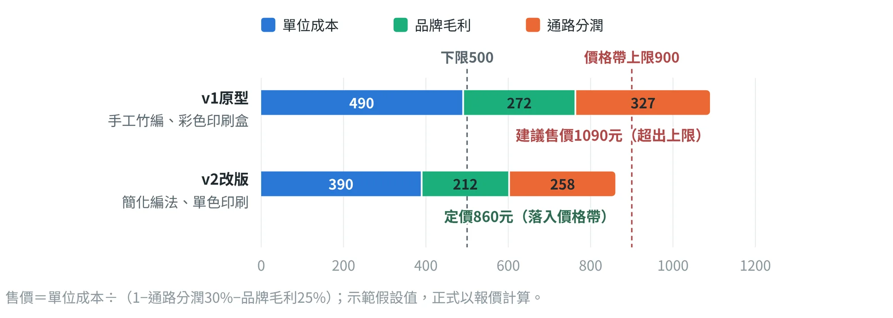
敏感度：材料與工藝單價波動時，還剩多少？
定價一旦固定，成本上的小變動會直接吃掉餘額。以v2為例，若材料小計增加10%（333→366.30元），單位成本變為366.30×1.05＋40＝424.615元（約424.62元），餘額由212.35元降到約177.39元，比例由24.69%降為20.63%（表10.13）。這個練習顯示，竹編的工藝單價與電子零件的價格波動，會直接影響設計可以承受的費用。
| 情境（定價860元、分潤30%＝258元） | 材料小計 | 單位成本 | 可分配餘額 | 餘額比例 |
|---|---|---|---|---|
| v2基本情境 | 333 | 389.65 | 212.35 | 24.69% |
| 材料價格上漲10% | 366.30 | 424.62 | 177.39 | 20.63% |
計算：366.30×1.05＋40＝424.615；860－258－424.615＝177.385，約177.39元；177.385÷860＝20.63%。
簡化編法不能只由設計者決定。要和職人討論它是否真的減少工時、是否影響結構與工藝辨識；改選較小的電池，也要用實測續航與使用情境判斷。若核心價值被削弱，可能需要調整價格帶、供應方式，甚至整個概念，而不是持續壓低報酬。
成本表的每個數字，正式作業都要有報價或實測來源並註明日期；AI只能協助計算，不能估算單價。接著列出「生產與通路確認表」，只列問題、不預設答案：
- 製作端：竹編藝師的意願、產能、最小訂量、交期、單價，簡化編法的可行性，姓名與作品的使用同意；第二位職人、竹材供應者、電子零件與電池的供應及檢驗單位、包材與印刷業者。
- 通路端：文化節的攤位申請、展售規則與輪值他鄉年度的備案；文化館是否同意展售、陳列與分潤；牧場賣場的陳列與寄賣條件。
- 授權端：崇賢寺名稱與意象的書面同意與回饋方式；詔安好伴屋與居民的客語審訂與酬勞。
與遊程銜接時，商品與活動有四個接點：試售與測試合一（市集試售同時做v2原型測試）、現場點亮一盞樣品讓沒參加迎暗境的人也看懂、與活動贈品區隔（2025年報名者可領復刻鎢絲火把〔崙1〕，商品包裝與故事卡要寫明用途與來源）、輪值年度的備案（改在文化館或牧場賣場試售）。
10.9S8 測試與評估迭代：用證據改版#
測試分兩次：概念測試在三概念階段，測方向是否被需要；原型測試在深化之後，測用起來順不順、看不看得出地方、願不願意買。對象包含目標客群5–8人、居民或職人1–2人、通路業者1人。量表用五項指標（各1題，1–5分）、購買意願，以及地方共識（像不像這個地方、是否適切、是否願意推薦）。測試前說明目的並取得同意；不誘導受試者給高分，並保留不同的意見。
表10.14是v1測試的紀錄與改版清單。表中的受試者原話是為了示範而設定，不是實際訪談示範假設。重點在每一項改版都對應一筆證據、一個受影響的指標。
| 問題 | 證據 | 影響指標 | 改版內容 |
|---|---|---|---|
| 造型被當成燈籠 | 5位旅客中3人先猜「燈籠」 | 吸引力、地方性 | 燈罩改為更細長、頂端收尖，加上竹柄；故事卡第一行直接寫「火把」 |
| 光色不像火 | 「亮是亮，但不像火」 | 吸引力 | 改為偏橘的暖光，並加大編孔使光影有層次待確認 |
| 找不到開關 | 8人中4人找不到 | 實用性 | 開關移到側邊，並加凹點作記號 |
| 客語看不懂、用字不對 | 「拼音看不懂」；居民指出用字不對 | 地方性 | 客語一句改由LB-10與居民審訂，拼音旁加華語，音檔放QR待確認 |
| 寄送壓損 | 試寄3件中1件壓損 | 可行性 | 內襯卡位並加燈罩護套；改版後重新寄送測試 |
| 售價偏高 | 建議售價1,090元；「一千多有點貴，八百多可以考慮」 | 可行性 | 簡化編法、單色印刷、改小電池，v2定價860元 |
| 圖樣與用途 | 居民：「不要神轎、符令那一類的圖樣；要寫清楚是紀念品，不是祭祀用品」 | 地方性 | 圖紋只用火點與瓜網；盒背標示「紀念品，非祭祀用品」 |
改版後做v2原型測試，結果如圖10.12：加權總分由36.4提高到41.6，購買意願由3.2提高到4.0。可行性在v1只有2.9分、是五項指標中最低的，與S5預先指出的弱點一致。v2的數字同樣是示範假設。
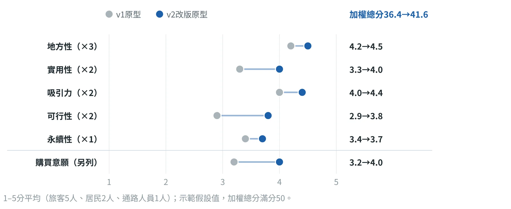
放行前的三道閘門：文化、技術、營運
v2的分數提高了，卻不能直接當成放行的理由。崙背示範把待驗證的事項分成三組：文化組確認名稱、語意、圖像與回饋方式；技術組確認竹編結構、電氣、充電、光熱與包裝；營運組確認職人產能、材料供應、定價與通路。任何一組仍有阻斷問題，都不能靠另一組的高分，或一張精緻的模擬圖，直接放行（圖10.13）。
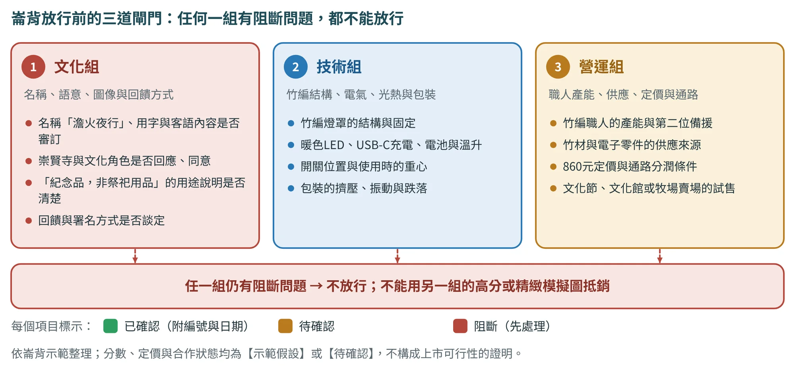
每一組都要指定負責的角色、所需的證據與再測方式（提示詞Q8-8）。這也回應了表17.4的田野任務：授權類先於供應類，會改變設計方向的先於只影響細節的。
10.10竹山示範：從遊程的未完成經驗，走到竹杯彩繪包#
竹山示範把成果9遊程裡「沒畫完的竹杯」，變成可以帶回家繼續畫的「竹杯彩繪包」。它的起點是試走時留下的一筆證據：兩位旅客在元泰竹藝社沒有把竹杯畫完，並說「很想帶回家繼續畫」示範假設。本節依S1–S8的順序，把竹山完整走一遍；與崙背的並排對照放在10.11節。
S1 商品任務：從未完成的作品開始
研究假設是：旅客透過工具、手藝與老空間理解竹的地方關係，但手作時間可能不足，作品與記憶也需要回到日常。商品因此不只是在旅程末端多一次購物，而是承接「未完成的作品」與後續使用。這個假設的DNA主軸是D1竹產業與竹工藝，相關脈絡為D2林圮埔市街與信仰、D3老空間活化與返鄉青年；它們是教材支持的候選解釋，正式研究仍需居民訪談、歷史資料與現地觀察，工廠數、營業時間與歷史報導語句也不能沿用未更新的資料當作現況。
圖10.14把整條推論放在一頁：每一步都有證據、每一步都可以被後一步推翻，測試之後要回到概念與規格改版。
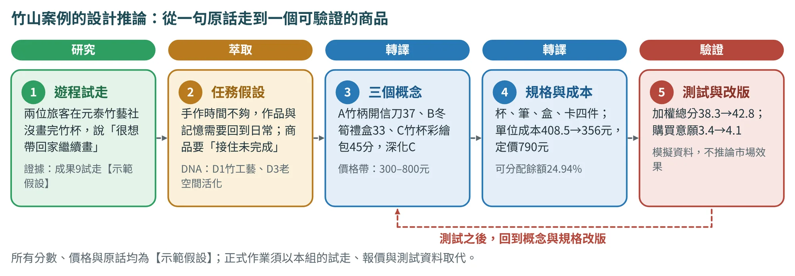
| 任務項目 | 示範設定（示範假設） |
|---|---|
| 場域 | 南投縣竹山鎮（竹山市街） |
| 目標情境 | 30–45歲的手作與散步旅客；自用為主、送禮為輔 |
| 價格與規模 | 整體探索300–800元；以100組試算 |
| 主案 | 竹山・竹杯彩繪包（概念C，深化） |
| 限制 | 需解決乾燥、攜帶、飲食接觸用途與供應 |
| 成功判準 | 作品能續作、資訊能理解、成本可承接、地方關係可追溯 |
S2–S3 十三個遊程POI，如何成為商品資源
竹山的13個POI已在第11章為遊程評選（圖11.3）。商品沿用同一份資料與同一組ZS編號，只是換成商品的眼光：每個POI能提供材料、工藝、故事、視覺或通路中的哪一種？表10.16是各POI在本案的配置。所謂「優先」或「備援」，都是設計研究的配置，不代表已取得供貨或接待的承諾。
| 編號／候選 | 主要地方角色 | 本案配置 |
|---|---|---|
| ZS-01 連興宮 | 市街信仰與故事 | 遊程背景 |
| ZS-02 百年廟口肉圓 | 竹筍飲食與生活 | 遊程轉場 |
| ZS-03 來發鐵店 | 工具、工藝與產業故事 | 優先：故事與工藝線索 |
| ZS-04 元泰竹藝社 | 竹器、材料與手作 | 優先：工藝與供應候選 |
| ZS-05 竹屋／竹生活文化促進協會 | 竹藝傳承與共作 | 備援：工藝候選 |
| ZS-06 台西冰菓室 | 竹碗與老車站生活 | 優先：故事線索 |
| ZS-07 竹青庭人文空間 | 竹編空間與視覺 | 優先：視覺採樣候選 |
| ZS-08 足安心 | 地方農產與展售 | 優先：通路候選 |
| ZS-09 森林麵食 | 地方飲食 | 備援：餐飲 |
| ZS-10 紫南宮 | 信仰場域 | 超出本案市街步行範圍 |
| ZS-11 大鞍竹海 | 竹林與地景 | 延伸採樣；不是已確認的材料來源 |
| ZS-12 集山路筍市 | 季節產業與市場 | 季節延伸；開市時段待更新待確認 |
| ZS-13 農會展售中心 | 地方展售 | 備援：通路候選 |
商品主案優先研究ZS-04、03、08、07、06，備援為ZS-05、13。這個配置把工藝、故事、視覺與通路連在一起，但供應條件仍須逐一補上。竹海可以提供自然與視覺的研究線索，卻不能因此推論商品的竹材就來自該處。
對每一項商品元素，都要建立「DNA—POI—來源—設計—確認狀態」的對照（格式見表17.3）。例如引用竹青庭空間中的編織時，要記錄那是「觀察到的構成關係」，還是「借用某位設計者的特定作品」：兩者的使用方式與權利處理不同（見第15章）。
S5 三個概念，如何收斂為竹杯彩繪包
| 概念 | 價值與價格假設 | 示範總分／取捨 |
|---|---|---|
| A 竹柄開信刀 | 工具與工藝收藏；800–1,200元 | 37／50；超出任務書上限，列為未來限量案 |
| B 冬筍季節禮盒 | 在地飲食與季節送禮；350–600元 | 33／50；季節、食品內容與保存須另案研究 |
| C 竹杯彩繪包 | 手作續作與日常使用；600–800元 | 45／50；選為深化主案 |
這三個分數來自教學評選，不是市場調查的結果。選C的關鍵，在於它同時銜接手作遊程與回家後的使用，並且有清楚的改版問題。A並不是沒有價值，而是與這次的價格帶不合；B也不是比較差，而是需要另一套季節與食品供應的研究（筍市只在12月至隔年4月開市）。
需求轉譯先處理三件事：日常使用與清潔、分段完成作品、簡短而可以回述的地方故事。10.5節的簡化QFD示範了如何把這些需求轉成規格；正式研究不能直接沿用本書的重要度，應請實際使用者與業者提供依據。
S6 深化設計：四層結構與故事卡
| 四層 | 本案具體做法 | 待完成的驗證 |
|---|---|---|
| 核心 | 竹工藝×把作品帶回日常 | 居民的意義與旅客的需求 |
| 物件 | 竹杯、兩支顏料筆、一支竹吸管；外側局部彩繪 | 用途、塗層、清潔、乾燥與材料來源 |
| 包裝溝通 | 較淺的天地蓋盒、瓦楞內襯、短故事卡與使用說明 | 攜帶、固定、文字閱讀與圖紋 |
| 服務通路 | 工坊續作、門市樣品、回家後的說明 | 接待、陳列、分潤與補貨 |
故事卡的示範改寫如下：「在竹山市街，竹器、工具與手藝交會成生活的線索。這份彩繪包邀請你延續手作，把觀察到的竹紋與編織節奏留在作品上。畫完之後，再回想今天遇見的人與技藝。」這段是依教材主題撰寫的設計文案；上市前仍須確認實際內容物、使用方式與來源，不能取代必要的標示。
S7 原型、成本與通路：從908元回到價格帶
以下單價全部為模擬值，單位為新臺幣元／組，未含物流、管理、稅務、授權及其他未列費用。v1的建議售價約908元，超出300–800元的價格帶；團隊回頭調整規格，得到v2（表10.19）。
| 項目 | v1 | v2 | 改版理由 |
|---|---|---|---|
| 竹杯與打底 | 180 | 180 | 保留主要使用價值 |
| 顏料筆 | 90（3支） | 60（2支） | 保留主色與強調色 |
| 竹吸管 | 25 | 25 | 須確認用途與清潔待確認 |
| 外盒 | 55 | 40 | 彩印改單色 |
| 內襯 | 12 | 7 | 改瓦楞紙卡，仍須運輸測試 |
| 故事卡 | 8 | 8 | 內容精簡，成本不變 |
| 材料小計 | 370 | 320 | 減少50 |
| 損耗5% | 18.50 | 16.00 | 以材料為基礎 |
| 組裝工資 | 20 | 20 | 實際工時待量測待確認 |
| 模型單位成本 | 408.50 | 356.00 | 減少52.50 |
| 試算售價（成本÷0.45） | 907.78 | 791.11 | 約取908與791 |
| v2示範定價 | — | 790 | 可分配餘額比例24.94% |
計算v2：320×1.05＋20＝356；790×30%＝237；790－237－356＝197；197÷790＝24.94%。這是簡化模型的可分配餘額比例（見10.8節的名詞說明），正式定價還要處理未列費用與通路條件。
若通路分潤改為35%，同樣的售價下餘額變成790－276.5－356＝157.5元，比例降為19.94%（圖10.16）。通路條件會直接影響設計能承受的成本，不能等到包裝完成才討論寄賣分潤。成本降低之後也要再測：兩支筆夠不夠完成任務？單色印刷是否仍清楚？瓦楞內襯固不固定得住？若降價犧牲了核心體驗，要回到規格與價值主張，而不是繼續刪材料。
情境模擬圖：商品家族與全套視覺提案
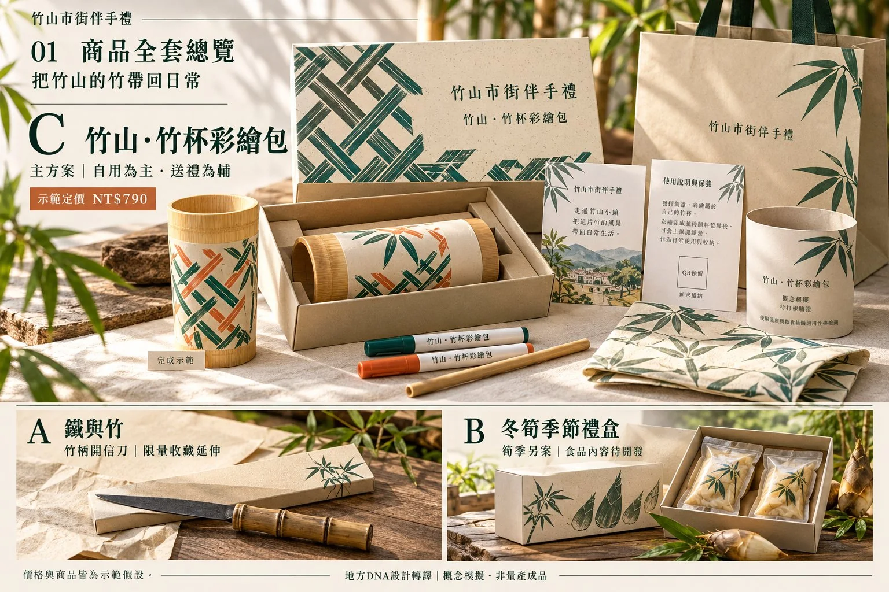
讀這張圖，先看四件事：主案是否明顯、內容物是否容易理解、故事與使用資訊是否有位置、延伸商品是否共享語法。圖中以竹色、綠色、交錯線條與紙材感連結商品家族，讓開箱、攜帶與陳列形成同一個視覺方向。
這張圖適合討論氣氛與系統，不適合作為尺寸、材質、印刷或安全的證明。提袋、布件與展示樣品屬於延伸的視覺提案，沒有全部列入表10.19的BOM，不能用790元的試算暗示圖中所有物件都包含在售價內；圖中的文字與QR位置，也要重新排版、校對與實測。實物深化時，要把圖中每一項承諾列回規格表：杯口與杯內的處理、顏料適用方式、作品乾燥的判斷、內襯固定、清潔保養與售後窗口；若目前只能確認外觀，就把確認範圍停在外觀。
把商品接回250分鐘的遊程
商品與遊程是同一批POI的兩種用法（11.10節）。遊程時刻表見表11.8：09:30–13:40共250分鐘，停留200分鐘、轉場27分鐘、緩衝23分鐘。原先的模擬試走顯示，彩繪由計畫的50分鐘變成75分鐘；商品因此提出三個做法：預先打底、分段教學、回家續作。成果9的服務問題，成為成果8的設計需求，再由商品測試回頭修正遊程（表17.1）。路線、時間與服務均為教學假設；公開營運前須重新確認路況、開放、接待、費用、可及性與媒體使用。
S8 模擬測試與改版
以下分數與受試情境，全部是教學模擬，不是本書新進行的使用者研究。旅客、居民與門市人員的回饋，用來練習「由問題到改版」：較大的盒子、未乾沾色、故事太長、熱飲用途不清楚、門市看不到內容物，分別導向尺寸、乾燥保護、短文、使用標示與展示樣本。正式研究要保留真實的原話與角色，不沿用虛構的引句。
| 指標 | 權重 | v1 | v2 | 改版線索 |
|---|---|---|---|---|
| 地方性 | 3 | 4.3 | 4.5 | 來源與故事更清楚 |
| 實用性 | 2 | 3.5 | 4.2 | 盒體、乾燥與攜帶 |
| 吸引力 | 2 | 4.1 | 4.4 | 成品樣本與展示 |
| 可行性 | 2 | 3.2 | 4.0 | 規格與成本回到範圍 |
| 永續性 | 1 | 3.8 | 4.1 | 紙卡內襯的影響仍須驗證 |
| 加權總分 | 滿分50 | 38.3 | 42.8 | 不能推論實際的市場效果 |
| 購買意願 | 另列 | 3.4 | 4.1 | 意願不等於真實購買 |
九項成果的完成方式，也要誠實地分開寫：已做的、待補的，以及只是模擬的。沒有做過的項目就保持待補，不讓一套模擬圖代替全部成果（表10.21）。
| 成果 | 竹山示範的完成方式與待補 |
|---|---|
| 成果1 地方DNA | 以竹產業網絡建立DNA證據（D1–D3）；居民檢核待補 |
| 成果2 五感體驗 | 採集工坊與街區的五感，例如竹片敲擊聲 |
| 成果3 文化語彙 | 審訂地方語彙（竹節、編織、慢旅）；用字待居民確認 |
| 成果4 設計語彙 | 建立竹節、交錯與續作的規則（節點化線條、編織模組） |
| 成果5 脈絡分析圖 | 呈現工藝與通路的關係（見6.7節） |
| 成果6 地方色彩 | 「竹山晨霧綠」等色彩，須補實際的色彩採樣待確認 |
| 成果7 地方圖紋 | 完成圖磚與套版（5×5連綴式竹編連續圖紋） |
| 成果8 特色商品 | 竹杯彩繪包：完成實物與成本（表10.19）；實物與測試仍為模擬 |
| 成果9 體驗遊程 | 完成試走與服務藍圖（第11章）；實際營運前須重新確認 |
10.11兩個示範的對照：竹山與崙背#
兩個示範的出發點不同：竹山來自遊程試走留下的一句原話，崙背來自活動主角「火把」帶不走。它們卻走同樣的八個步驟。表10.22把關鍵數字並排，圖10.16再把兩案的定價拆解放在一起，可以看出八個步驟如何一路收斂，以及通路與材料條件如何牽動餘額。
| 步驟 | 竹山：竹杯彩繪包 | 崙背：澹火夜行小夜燈 | |
|---|---|---|---|
| 主題與核心DNA | 把竹手藝延續到回家以後；D1竹產業與竹工藝、D3老空間活化與返鄉青年 | 把中秋夜的火光帶回日常；D2澹仔火與迎暗境、D1詔安客語 | |
| 價格帶 | 300–800元 | 500–900元 | |
| S3 POI | 13個候選，5個入選資源池 | 15個候選，6個入選資源池 | |
| S5概念評分 | A竹柄開信刀37、B冬筍禮盒33、C竹杯彩繪包45（深化C） | A小夜燈42、B瓜乳禮盒35、C客語小卡39（深化A） | |
| S7價格 | v1建議售價908元超出上限，v2定價790元 | v1建議售價1,090元超出上限，v2定價860元 | |
| S8測試 | 加權總分38.3→42.8；購買意願3.4→4.1 | 加權總分36.4→41.6；購買意願3.2→4.0 | |
| 最主要的改版 | 盒子縮小放得進隨身包；故事卡由約120字縮為約60字 | 開關移到側邊；簡化編法與單色印刷降低成本 | |
實踐案例 兩個示範共同的教訓 一、機會從證據來。 竹山的商品機會來自遊程試走的原話，崙背的來自活動主角「火把」帶不走；沒有證據的商品點子，只是靈感。 二、分數高不代表一定入選。 竹山的集山路筍市（41分）因為只在12月至隔年4月開市、筍製品屬食品而列為季節版；崙背的奉天宮（21分）與主題軸關聯低、且宗教圖像不採樣，不列入。 三、第一版的價格幾乎都會超出價格帶。 兩個示範的v1建議售價都超出上限，解法是回頭調整規格（減少配件、改變印刷方式、改小電池），而不是直接壓低毛利。 資料依張文山〈地方特色商品設計流程與示範說明書〉（竹山）與〈崙背鄉特色伴手禮示範說明書〉整理；兩者的商品概念、價格、成本與測試結果皆為示範假設。 | |||
兩案的定價拆解：通路與材料條件如何牽動餘額
兩個示範的v2定價都落在價格帶內，可分配餘額也都接近25%。但只要通路分潤多5個百分點（竹山），或材料漲10%（崙背），餘額就各降到19.94%與20.63%（圖10.16）。這個差距提醒我們：價格要和通路條件、材料報價一起討論，而不是等設計完成後才補。
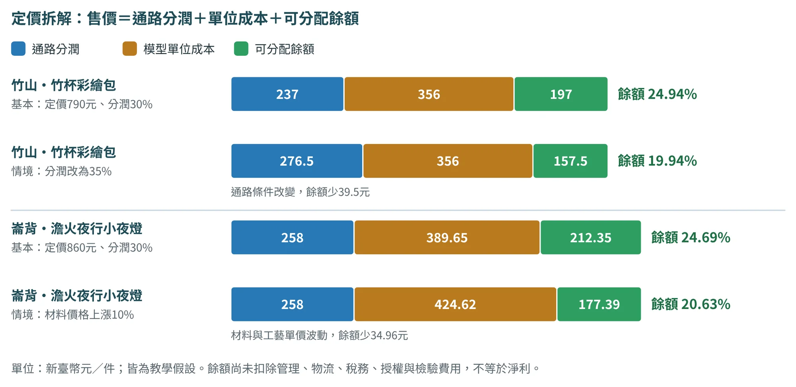
商品往外延伸：六個案例，六個不同的方向
竹山與崙背示範的是從遊程走到商品的完整流程（10.10、10.7節）。九個驗證案例裡，有六個提供了不同的商品方向（表10.23），提醒我們商品設計不只有「伴手禮」一條路：它可以是工藝、材料、品牌、新事業，也可以是「先保存、不急著做成商品」。這些商品在原文件中的狀態各不相同，請看第二欄的標示。
| 案例 | 商品或材料（狀態） | 延伸的方向 | 要先過的關 |
|---|---|---|---|
| 鹿谷 | 茶席文化館的五感體驗、茶咖智販機（提案）；窯火再生的小花器（前期成果） | 工藝與商品型：把陶瓷廢料變成新器物 | 191道配方與1:2比例是前期成果；超過100克廢料時成形性下降，量產前要先解決 |
| 斗南 | 米餅與米糠醬、不上妝醬油、鴨胸調理包、即食竹筍、絲瓜絡燈飾、戲偶文創（已實施） | 多個品牌共用廊帶識別 | 缺共同色票與使用規範（V4○）；ISO22000、HACCP等為品牌自述，未附證書 |
| 古坑 | 包裝紙與手提袋的模擬應用（設計稿） | 把視覺系統延伸到包裝 | 沒有田野證據的圖案不應量產；紙材、印刷與回收要補進永續四軸 |
| 埔里 | 以茭白筍殼、檳榔樹幹等在地材料研發的手工紙（已實施，媒體報導） | 材料創新型：用地方農業副產物造紙 | 取材來源與永續宣稱要有數據；廣編稿須回查原始資料 |
| 土庫 | 有機可可與「Tu Ku可可新生活計畫」913.2萬元（提案）；試驗園約5分地、310株 | 新事業型：另寫商業計畫 | 通不過「成因」與「不可替代」；金額與面積都是提案數字 |
| 北港 | 宏昇芽菜：有機（2016）、ISO22000、HACCP、產銷履歷（品牌自述）；3,000萬元低利貸款（提案目標） | 保存型：瀕危技藝的認證與品牌 | 保存優先於轉譯；「全台唯一」須查證待確認 |
商品與數字依各案例的簡報、提案與公開資料，狀態標籤見表5.4；來源編號見附錄F.6。
10.12AI協作：發散與計算交給AI，選點、評分與決定留給人#
商品設計的AI協作，在「發散概念」「整理資料」「計算分數與成本」「彙整測試」四件事上最有幫助。但商品設計有一條很清楚的界線：評分、選點、命名、概念選擇與最終規格，由小組決定；AI提供候選、計算與檢查。 價格、成本、產能、最小訂量、法規與聯絡方式，凡是沒有提供的，一律標「待確認」，不可推測。尺寸、結構、成本、製程、食品與安全規範、供應鏈可行性，都須由人或業者確認。
依以下地方DNA、商品資源池、Persona、QFD前三名規格與限制條件：【貼上】，提出3個方向不同的商品概念。每個概念用同一格式：名稱（暫定）｜目標情境｜核心DNA與來源POI｜使用情境｜材料與製程｜包裝故事｜價格帶假設｜永續考量｜主要風險。每一項都寫出依據的資料編號；價格與製程只寫我提供範圍內的假設，其餘標「待確認」。最後用DFVS比較，但不要替我決定最終方案。輸出最後增加「人工查核清單」，列出需由居民、專家或設計者確認的項目。
提示詞依張文山〈AI協作Prompt增補版〉（第三版-2）「地方特色商品設計」與商品說明書的S5提示詞整理。
以下是3個概念卡與我們的評分：【貼上：概念｜地方性｜實用性｜吸引力｜可行性｜永續性｜給分理由】。權重依序為3、2、2、2、1，滿分50。請：①計算加權總分；②以DFVS四問（有人想要嗎、做得出來嗎、賣得下去嗎、對環境與社區好嗎）整理每個概念的證據與待確認事項；③列出每個概念最需要測試的一個假設。比較結果僅供討論，不要宣布哪一案勝出，也不要更改我們的分數。
以下是材料、包材、加工與物流的報價：【貼上：項目｜單價｜數量｜報價來源與日期】，以及通路分潤率、目標毛利率與任務書的價格帶：【貼上】。請整理BOM，計算單位成本與建議售價（單位成本÷（1−分潤率−毛利率）），並與價格帶比較。若超出價格帶，列出3個調整規格的選項，以及各自影響的需求（引用QFD）。不要自行估算任何單價。
以下是測試的量表分數、觀察紀錄與原話：【貼上】。請：①計算各指標的平均與分布，並依我們訂的權重計算加權總分；②整理共通問題與分歧意見，保留少數意見；③列出改版清單：問題｜證據（數字或原話）｜影響的指標｜改版做法｜優先順序（高／中／低）。沒有證據支持的建議，另列為「待觀察」。
依以下竹山的13個POI資料與【本組新取得的資料】：【貼上】，建立材料、工藝、故事、視覺、通路五種角色的矩陣。每個商品元素都列出來源與確認狀態；把教材線索、實際訪談與合作同意分開，指出缺少的供應與備援。不要補寫任何供貨、報價或合作意願。
依【本組的時刻表、手作流程與商品規格】：【貼上】，找出體驗未完成、乾燥、攜帶、說明與陳列的交接問題。逐項列出前台、後台、責任人、商品如何承接，以及還需要哪一種測試；所有假設保留示範假設或待確認標記。
依【崙背的來源與語彙卡】：【貼上】，並列不同的寫法、年份與事件定義。把「可支持的描述」「研究推論」「設計延伸」與「待審訂」分開。提出一段不使用未確認數字與起源年份的故事草稿；不要編造客語拼音、音檔或用字。
依【最新的原型、來源、文化回應、BOM與合作紀錄】：【貼上】，分文化、技術、營運三組，列出「已確認」「待確認」與「阻斷」項目。每一項指定負責角色、所需證據與再測方式；不要用模擬分數或精緻的圖片宣稱上市可行，也不要替我們決定是否放行。
Q8-5至Q8-8為整合竹山與崙背完整示範時新增的提示詞，使用原則與P0相同：只依提供的資料、未知標示待確認、判斷留給人。
除了上述八則，POI建檔與加權評分計算、VPC與QFD計算、CMF與標示、情境模擬圖的影像提示詞等，彙整在附錄B。情境模擬圖的限制：不得出現他人品牌或商標、可辨識的真人面孔，不得直接複製傳統或宗教圖像，圖紋與色彩只描述為「使用本組提供的四方連續樣式圖與色碼」。